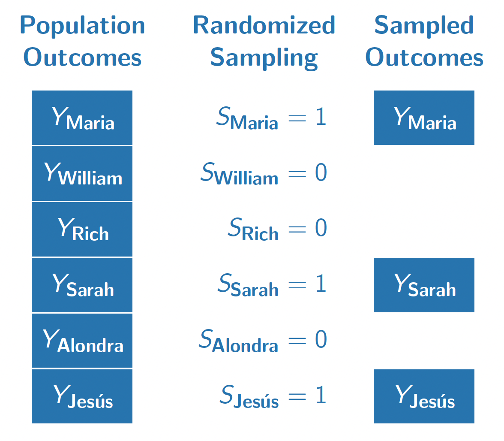

Nonparametric Identification
The course so far has focused on descriptive claims. For example, we have estimated the average value of an outcome in the population, or among population subgroups. This lecture pivots to causal claims: what would happen if a population were exposed to a hypothetical intervention.
Fundamental problem of causal inference
Health professionals often advise people to eat a Mediterranean diet high in healthy fats such as olive oil, whole grains, and fruits. There is descriptive evidence that lifespans are longer among people who eat a Mediterranean diet compared with among people who eat a standard diet. But does eating a Mediterranean diet cause longer lifespan? The figure below visualizes this question in the potential outcomes framework.

In this hypothetical example, each row corresponds to a person. Person 1 follows a Mediterranean diet and is observed to have a lifespan indicated in blue. Person 2 does not follow a Mediterranean diet and is observed to have a lifespan indicated in green. The descriptive evidence is that lifespans are longer among those eating a Mediterranean diet (blue outcomes on the left) compared with those eating standard diets (green outcomes on the left).
The right side of the figure corresponds to the causal claim, which is different. Person 1 has two potential outcomes: a lifespan that would be realized under a Mediterranean diet and a lifespan that would be realized under a standard diet. The causal effect for Person 1 is the difference between the lifespans that would be realized for that person under each of the two diets. But there is a fundamental problem: person 1 ate a Mediterranean diet, and we did not get to observe their outcome under a standard diet. The fundamental problem of causal inference (Holland 1986) is that causal claims involve a contrast between potential outcomes, but for each unit only one of these potential outcomes is realized. The other is counterfactual and cannot be directly observed.
We will need additional argument and assumptions to use the factual data (left side of the figure) in order to produce answers about causal effects (right side of the figure). Causal inference is a missing data problem insofar as many of the potential outcomes we need are missing.
Mathematical notation
Because each person has more than one potential outcome, we need new mathematical notation to formalize causal claims. We will use subscripts to indicate units (rows of our data). Let \(Y_i\) be the outcome for person \(i\), such as whether person \(i\) survived. Let \(A_i\) be the treatment of person \(i\), for example taking the value or the value . To refer more abstractly to a value the treatment could take, we use the lower case notation \(a\) for a treatment value. Define potential outcomes \(Y_i^\text{MediterraneanDiet}\) and \(Y_i^\text{StandardDiet}\) as the lifespan outcomes that person \(i\) would realize under each of the treatment conditions. More generally, let \(Y_i^a\) denote the potential outcome for unit \(i\) that would be realized if assigned to treatment value \(a\).
The causal effect is a contrast across potential outcomes. For example, the causal effect on Ian’s lifespan of eating a Mediterranean diet versus a standard diet is \[Y_\text{Ian}^\text{MediterraneanDiet} - Y_\text{Ian}^\text{StandardDiet}\]
To connect causal claims to ideas we have already covered from sampling, we will adopt a framework in which potential outcomes are fixed quantities with randomness arising from sampling and/or from random treatment assignment. Each person has a fixed outcome \(Y_i^\text{MediterraneanDiet}\) that would be observed if they were sampled and assigned a Mediterranean diet. This is just like how every baseball player from last week had a salary that would be observed if they were sampled. We will sometimes omit the \(i\) subscript to refer to the random variable for the potential outcome of a randomly-sampled person from the population, \(Y^\text{MediterraneanDiet}\).
The consistency assumption
We want to make causal claims about potential outcomes \(Y_i^a\), but what we observe are factually realized outcome \(Y_i\). To draw the connection, we need to assume that the factual outcomes are consistent with what would be observed if the person in question were assigned to the treatment condition that factually observed. Using \(A_i\) to denote the factual treatment for person \(i\), we assume
\[ Y_i^{A_i} = Y_i \qquad\text{(consistency assumption)} \] This assumption is often obviously true, but we will see later examples where it is violated. One example is when person \(i\)’s outcome depends not only on their own treatment but also on the treatment of some neighboring person \(j\). In many of our initial examples, we will simply assume the consistency assumption holds.
Potential outcomes in math and in words
We will often use potential outcomes within mathematical statements. For example, we might write about the expected outcome if assigned to a Mediterranean diet, \(E(Y^\text{MediterraneanDiet})\). Recall that the expectation operator \(E()\) says to take the population mean of the random variable within the parentheses. We will also use conditional expectations, such as \(E(Y\mid A = \text{MediterraneanDiet})\) which reads “the expected value of \(Y\) given that \(A\) took the value .” The vertical bar says that we are taking the expected value of the variable on the left of the bar within the subgroup defined on the right side of the bar.
In class, we practiced writing statements in math and in English. For example, the mathematical statement \[
E(\text{Earning} \mid \text{CollegeDegree} = \texttt{TRUE}) > E(\text{Earning} \mid \text{CollegeDegree} = \texttt{FALSE})
\] is a descriptive statement that says the expected value of earnings is higher among the subgroup with college degrees than among those without college degrees. We made these kinds of descriptive claims already in code by using group_by() and summarize().
The mathematical statement \[ E\left(\text{Earning}^{\text{CollegeDegree} = \texttt{TRUE}}\right) > E\left(\text{Earning}^{\text{CollegeDegree} = \texttt{FALSE}}\right) \] is a causal claim that the expected value of earnings that a random person would realize if assigned to a college degree is higher than the expected value if a random person were assigned to no college degree. Because there is no vertical bar (\(\mid\)), the causal claim is an average over the entire population on both sides of the inequality. The descriptive claim, by contrast, is an average over two different sets of units. The figure below visualizes the difference between these descriptive and causal claims using a visual analogous to the one used to introduce a Mediterranean diet.

Exchangeability in simple random samples
Causal effects involve both factual and counterfactual outcomes, yet data that we can observe involve only factual outcomes. To learn about causal effects from data that can be observed requires assumptions about the data that are not observed. One way to learn about that is by making an assumption known as exchangeability.
The figure below illustrates a population of 6 people. Each person has an outcome \(Y_i\), which for example might be that person’s employment at age 40. A researcher draws a random sample without replacement with equal sampling probabilities and records the sampled outcomes. The researcher uses the average of the sampled outcomes as an estimator for the population mean.

Why do probability samples like this work? They work because selection into the sample (\(S = 1\)) is completely randomized and thus independent of the outcome \(Y\). In other words, the people who are sampled (\(S = 1\)) and the people who are unsampled (\(S = 0\)) have the same distribution of outcomes (at least in expectation over samples). We might say that the sampled and the unsampled units are exchangeable in the sense that they follow the same distribution in terms of \(Y\). In math, exchangeable sampling can be written as follows.
\[ \underbrace{Y}_\text{Outcome}\quad \underbrace{\mathrel{\unicode{x2AEB}}}_{\substack{\text{Is}\\\text{Independent}\\\text{of}}} \quad \underbrace{S}_{\substack{\text{Sample}\\\text{Inclusion}}} \]
Exchangeability holds in simple random samples because sampling is completely independent of all outcomes by design. In other types of sampling, such as convenience samples that enroll anyone who is interested, exchangeability may hold but is far from guaranteed. Perhaps people who are employed are more likely to answer a survey about employment, so that the employment rate in a convenience sample might far exceed the population mean employment rate. Exchangeability is one condition under which reliable population estimates can be made from samples, and probability samples are good because they make exchangeability hold by design.
Exchangeability in randomized experiments
The figure below illustrates our population if they all enrolled in a hypothetical randomized experiment. In this experiment, we imagine that each unit is either randomized to attain a four-year college degree (\(A = 1)\) or to finish education with a high school diploma (\(A = 0\)).
In this randomization, Maria, Sarah, and Jes'us were randomized to attain a four-year college degree. We observe their outcomes under this treatment condition (\(Y^1\)). Because treatment was randomized with equal probabilities, these three units form a simple random sample from the full population of 6 people. We could use the sample mean of \(Y^1\) among the treated units (Maria, Sarah, Jes'us) as an estimator of the population mean of \(Y^1\) among all 6 units.
William, Rich, and Alondra were randomized to finish their education with a high school diploma. We see their outcomes under this control condition \(Y^0\). Their treatment assignment (\(A = 0\)) is analogous to being sampled from the population of \(Y^0\) values. We can use their sample mean outcome as an estimator of the population mean of \(Y^0\).
Formally, we can write the exchangeability assumption for treatment assignments as requiring that the set of potential outcomes are independent of treatment assignment.
\[ \underbrace{\{Y^1,Y^0\}}_{\substack{\text{Potential}\\\text{Outcomes}}}\quad\underbrace{\mathrel{\unicode{x2AEB}}}_{\substack{\text{Are}\\\text{Independent}\\\text{of}}}\quad \underbrace{A}_\text{Treatment} \] Exchangeability holds in randomized experiments because treatment is completely independent of all potential outcomes by design. In observational studies, where treatment values are observed but are not assigned randomly by the researcher, exchangeability may hold but is far from guaranteed. In the coming classes, we will talk about generalizations of the exchangeability assumption that one can argue might hold in some observational settings.
Causal identification
A population-average causal effect could take many possible values. Using data alone, it is impossible to identify which of these many possible values is the correct one. By pairing data together with causal assumptions, however, one can identify the average causal effect by equating it with a statistical quantity that only involves observable random variables.
Causal identification. A mathematical proof linking a causal estimand (involving potential outcomes) to a statistical quantity involving only factual random variables.
In a randomized experiment, the average causal effect is identified by the assumptions of consistency and exchangeability. A short proof can yield insight about the goals and how these assumptions are used.
\[ \begin{aligned} &\overbrace{\text{E}\left(Y^1\right) - \text{E}\left(Y^0\right)}^{\substack{\text{Average}\\\text{causal effect}\\\text{(among everyone)}}} \\ &= \text{E}\left(Y^1\mid A = 1\right) - \text{E}\left(Y^0\mid A = 0\right) &\text{by exchangeability}\\ &= \underbrace{\text{E}\left(Y\mid A = 1\right)}_{\substack{\text{Mean outcome}\\\text{among the treated}}} - \underbrace{\text{E}\left(Y\mid A = 0\right)}_{\substack{\text{Mean outcome}\\\text{among the untreated}}} &\text{by consistency} \end{aligned} \]
The proof begins with the average causal effect and equates it to a statistical estimand: the mean outcome among the treated minus the mean outcome among the untreated. The first quantity involves potential outcomes (with superscripts), whereas the last quantity involves only factual random variables.
The exchangeability assumption allows us to move from the first line to the second line. Under exchangeability, the mean outcome that would be realized under treatment (\(\text{E}(Y^1)\)) equals the mean outcome under treatment among those who were actually treated (\(\text{E}(Y^0)\)). Likewise for outcomes under no treatment. This line is true because the treated (\(A = 1\)) and the untreated (\(A = 0\)) are both simple random samples from the full population.
The consistency assumption allows us to move from the second line to the third. Among the treated, (\(A = 1\)), the outcome that is realized is \(Y = Y^1\). Among the untreated (\(A = 0\)), the outcome that is realized is \(Y = Y^0\). Under the assumption that factual outcomes are consistent with the potential outcomes under the assigned treatment, the second line equal the third.
Something nice about a causal identification proof is that there is no room for error: it is mathematically true that the premise and the assumptions together yield the result. As long as the assumptions hold, the statistical estimand equals the causal estimand. Causal inference thus boils down to research designs and arguments that can lend credibility to the assumptions that let us draw causal claims from data that are observed.
Conditional exchangeability
Conditional exchangeability is an assumption that exchangeability holds within population subgroups. This assumption holds by design in a conditionally randomized experiment, and may hold under certain causal beliefs in observational settings where the treatment is not randomized.
Suppose we were to carry out an experiment on a simple random sample of U.S. high school students. Among those performing in the top 25% of their high school class, we randomize 80% to attain a four-year college degree. Among those performing in the bottom 75% of their high school class, we randomize 20% to attain a four-year college degree. We are interested in effects on employment at age 40 (\(Y\)).
This experiment is conditionally randomized because the probability of treatment (four-year degree) is different among the higher- and lower-performing high school students.
Conditionally randomized experiment. An experiment in which the probability of treatment assignment depends on the values of pre-treatment covariates. \(\text{P}(A = 1\mid\vec{X} = \vec{x})\) depends on the value \(\vec{x}\).
In a conditionally randomized experiment, exchangeability is not likely to hold. People who are treated (assigned to a four-year degree) are more likely to have come from the top 25% of their high school class. They might be especially hard-working people. The treated and untreated might have had different employment at age 40 even if none of them had been treated.
Even though exchangeability does not hold marginally (across everyone), in a conditionally randomized experiment exchangeability does hold within subgroups. If we focus on those in the top 25% of the class, the 90% who are assigned to finish college are a simple random sample of the entire higher-performing subgroup. If we focus on those in the bottom 75% of the class, the 10% who are assigned to finish college are a simple random sample of the entire lower-performing subgroup.
Formally, conditional exchangeability takes the exchangeability assumption (\(\{Y^0,Y^1\}\unicode{x2AEB}A\)) and adds a conditioning bar \(\mid\vec{X}\), meaning that this assumption holds within subgroups defined by one or more pre-treatment variables \(\vec{X}\).
Conditional exchangeability. The assumption that potential outcomes \(\{Y^0,Y^1\}\) are independent of treatment \(A\) among subpopulations that are identical along a set of pre-treatment covariates \(\vec{X}\). Formally, \(\{Y^0,Y^1\} \unicode{x2AEB} A \mid \vec{X}\).
Conditional exchangeability holds by design in conditionally randomized experiments: the probability of treatment assignment differs across subgroups, but within each subgroup we have a simple randomized experiment where each unit has an equal probability of being treated.
Conditional average treatment effects
In our conditionally randomized experiment, we could identify conditional average treatment effects: the average effects of college on employment at age 40 (1) among those in the top 25% of their high school class, and the and (2) among those in the bottom 75% of their high school class.
Conditional average treatment effect (CATE). The average causal effect within a population subgroup, \(\tau(x) = \text{E}\left(Y^1\mid\vec{X} = \vec{x}\right) - \text{E}\left(Y^0\mid \vec{X} = \vec{x}\right)\).
Once we assume conditional exchangeability and consistency, CATEs are causally identified by working within a subgroup defined by \(\vec{X} = \vec{x}\) and taking the difference in means across subgroups of units assigned to treatment and control.
\[ \begin{aligned} &\text{E}\left(Y^1\mid\vec{X} = \vec{x}\right) - \text{E}\left(Y^0\mid\vec{X} = \vec{x}\right)\\ &= \text{E}\left(Y\mid\vec{X} = \vec{x}, A = 1\right) - \text{E}\left(Y\mid\vec{X} = \vec{x}, A = 0\right) \end{aligned} \]
In our concrete example, this means that we could first focus on the subgroup for whom \(\vec{X} = (\text{Top 25\% of high school class})\). Within this subgroup, we can compare employment at age 40 among those randomized to a 4-year college degree to employment at age 40 among those randomized to finish education after high school. This mean difference identifies the CATE: the average causal effect of college among those in the top 25% of their high school class.
Likewise, our experiment would also identify the CATE among those in the bottom 75% of their high school class.
There are often good reasons to expect the Conditional Average Treatment Effect (CATE) to differ across subpopulations. In our example, suppose that those from the top 25% of the high school class are very creative and hard-working, and would find ways to be employed at age 40 regardless of whether they finished college. The average causal effect of college on employment in this subgroup might be small. Meanwhile, the average causal effect of college on employment might be quite large among those from the bottom 75% of their high school class. This would be an example of effect heterogeneity,
Effect heterogeneity. Differences in Conditional Average Treatment Effects (CATEs) across subpopulations. \(\tau(\vec{x})\neq\tau(\vec{x}')\).
An advantage of analyzing randomized experiments conditionally (within subgroups) is that one can search for effect heterogeneity.
Observational studies call for DAGs
The material above focused on randomized experiments in which the researcher randomizes the treatment variable. In a randomized experiment, the researcher knows the probability with which treatment was assigned to each unit. Either exchangeability or conditional exchangeability holds by design. Many social science studies, however, focus on questions in which randomization is infeasible due to high costs or even the impossibility of randomizing a treatment. Many social science studies are therefore observational studies.
Observational study. A study seeking to answer a causal question in which the researcher has not randomized the treatment variable.
Where randomized experiments call for precise research design in which the researcher assigns the treatment, observational studies call for precise theory about how the world has assigned the treatments and how the world has generated outcomes. Directed Acyclic Graphs (DAGs) are a tool to formalize causal assumptions mathematically in graphs.
Directed Acyclic Graph (DAG). A mathematical graph involving nodes and edges, where all edges are directed and there are no cycles. See below for definitions of nodes and edges.
DAGs are especially helpful in observational studies because they provide rules for selecting a sufficient adjustment set (\(\vec{X}\)) such that conditional exchangeability holds.
Nodes, edges, and paths
Consider again our conditionally randomized experiment in which the researcher assigned participants to the treatment condition of (four-year college degree) vs (high school degree) with probabilities that depended on high school class rank. In this experiment, being in the top 25% of one’s high school class caused a higher chance of receiving the treatment. We will also assume that both high school performance and college completion may causally shape employment at age 40.
We can formalize these ideas in a graph where each node (a letter) is a variable and each edge (\(\rightarrow\)) is a causal relationship.
Between each pair of nodes, you can enumerate every path or sequence of edges connecting the nodes.
Path. A path between nodes \(A\) and \(B\) is any set of edges that starts at \(A\) and ends at \(B\). Paths can involve arrows in either direction.
In our DAG above, there are two paths between \(A\) and \(Y\).
- \(A\rightarrow Y\)
- \(A\leftarrow X \rightarrow Y\)
We use paths to determine the reasons why \(A\) and \(Y\) might be statistically dependent or independent.
Causal paths
The first type of path that we consider is a causal path.
Causal path. A path in which all arrows point in the same direction. For example, \(A\) and \(D\) could be connected by a causal path \(A\rightarrow B \rightarrow C \rightarrow D\).
A causal path creates statistical depends between the nodes because the first node causes the last node, possibly through a sequence of other nodes.
In our example, there is a causal path \(A\rightarrow Y\): being assigned to a four-year college degree affects employment at age 40. Because of this causal path, people who are assigned to a four-year degree have different rates of employment at age 40 than those who are not.
A causal path can go through several variables. For example, if we listed the paths between \(X\) and \(Y\) we would include the path \(X\rightarrow A \rightarrow Y\). This is a causal path because being in the top 25% of one’s high school class increases the probability of assignment to a four-year degree in our experiment, which in turn increases the probability of employment at age 40.
Fork structures
To reason about non-causal paths, we have to think about several structures that can exist along these paths. The first such structure is a fork structure.
Fork structure. A fork structure is a sequence of edges in which two variables (\(A\) and \(B\)) are both caused a third variable (\(C\)): \(A\leftarrow C \rightarrow B\).
In our example, the path \(A\leftarrow X \rightarrow Y\) involves a fork structure. being in the top 25% of one’s high school class causally affects both the treatment (college degree) and the outcome (employment at age 40).
A fork structure creates statistical dependence between \(A\) and \(Y\) that does not correspond to a causal effect of \(A\) on \(Y\). In our example, people who are assigned to the treatment value (college degree) are more likely to have been in the top 25% of their high school class, since this high class rank affected treatment assignment in our experiment. A high class rank also affected employment at age 40. Thus, in our experiment the treatment would be associated with the outcome even if finishing college had no causal effect on employment.
Fork structures can be blocked by conditioning on the common cause. In our example, suppose we filter our data to only include those in the top 25% of their high school class. We sometimes use a box to denote conditioning on a variable, (\(A\leftarrow\boxed{X}\rightarrow Y\)). Conditioning on \(X\) blocks the path because within this subgroup \(X\) does not vary, so it cannot cause the values of \(A\) and \(Y\) within the subgroup. In our example, if we looked among those in the top 25% of their high school classes the only reason college enrollment would be related to employment at age 40 would be the causal effect \(A\rightarrow Y\).
To emphasize ideas, it is also helpful to consider a fork structure in an example where the variables have no causal relationship.
Suppose a beach records for each day the number of ice cream cones sold and the number of rescues by lifeguards. There is no causal effect between these two variables; eating ice cream does not cause more lifeguard rescues and vice versa. But the two are correlated because they share a common cause: warm temperatures cause high ice cream sales and also high lifeguard rescues. A fork structure formalizes this notion: \((\text{ice cream sales}) \leftarrow (\text{warm temperature}) \rightarrow (\text{lifeguard rescues})\).
In the population of days as a whole, this fork structure means that ice cream sales are related to lifeguard rescues. But if we condition on having a warm temperature by filtering to days when the temperature took a particular value, ice cream sales would be unrelated to lifeguard rescues across those days. This is the sense in which conditioning on the common cause variable blocks the statistical associations that would otherwise arise from a fork structure.
Collider structures
In contrast to a fork structure where one variable affects two others (\(\bullet\leftarrow\bullet\rightarrow\bullet\)), a collider structure is a structure where one variable is affected by two others.
Collider structure. A collider structure is a sequence of edges in which two variables (\(A\) and \(B\)) both cause a third variable (\(C\)). We say that \(C\) is a collider on the path \(A\rightarrow C \leftarrow B\).
Fork and collider structures have very different properties, as we will illustrate through an example.
Suppose that every day I observe whether the grass on my lawn is wet. I have sprinklers that turn on with a timer at the same time every day, regardless of the weather. It also sometimes rains. When the grass is wet, it is wet because either the sprinklers have been on or it has been raining.
\[ (\text{sprinklers on}) \rightarrow (\text{grass wet}) \leftarrow (\text{raining}) \]
If I look across all days, the variable (sprinklers on) is unrelated to the variable (raining). After all, the sprinklers are just on a timer! Formally, we say that even though (sprinklers on) and (raining) are connected by the path above, this path is blocked by the collider structure. A path does not create dependence between two variables when it contains a collider structure.
If I look only at the days when the grass is wet, a different pattern emerges. If the grass is wet and the sprinklers have not been on, then it must have been raining: the grass had to get wet somehow. If the grass is wet and it has not been raining, then the sprinklers must have been on. Once I look at days when the grass is wet (or condition on the grass being wet), the two input variables become statistically associated.
A collider blocks a path when that collider is left unadjusted, but conditioning on the collider variable opens the path containing the collider.
Open and blocked paths
A central purpose of a DAG is to connect causal assumptions to implications about associations that should be present (or absent) in data under those causal assumptions. To make this connection, we need a final concept of open and blocked paths.
A path is blocked if it contains an unconditioned collider or a conditioned non-collider. Otherwise, the path is open. An open path creates statistical dependence between its terminal nodes whereas a blocked path does not.
As examples for a path with no colliders,
- \(A\leftarrow B \rightarrow C \rightarrow D\) is an open path because no variables are conditioned and it contains no colliders.
- \(A\leftarrow \boxed{B}\rightarrow C \rightarrow D\) is a blocked path because we have conditioned on the non-collider \(B\).
- \(A\leftarrow B\rightarrow \boxed{C} \rightarrow D\) is a blocked path because we have conditioned on the non-collider \(C\).
Determining statistical dependence
We are now ready to use DAGs to determine if \(A\) and \(B\) are statistically dependent. The process involves three steps.
- List all paths between \(A\) and \(B\).
- Cross out any paths that are blocked.
- The causal assumptions imply that \(A\) and \(B\) may be statistically dependent only if any open paths remain.
As an example, below we consider a hypothetical DAG.
1. Marginal dependence
Marginally without any adjustment, are \(A\) and \(D\) statistically dependent? We first write out all paths connecting \(A\) and \(D\).
- \(A\rightarrow B \leftarrow C\rightarrow D\)
- \(A\leftarrow X\rightarrow D\)
We then cross out the paths that are blocked
- \(\cancel{A\rightarrow B \leftarrow C\rightarrow D}\) (blocked by unconditioned collider \(B\))
- \(A\leftarrow X\rightarrow D\)
Because an open path remains, \(A\) and \(D\) are statistically dependent.
2. Dependence conditional on \(X\)
If we condition on \(X\), are \(A\) and \(D\) statistically dependent? We first write out all paths connecting \(A\) and \(D\).
- \(A\rightarrow B \leftarrow C\rightarrow D\)
- \(A\leftarrow \boxed{X}\rightarrow D\)
We then cross out the paths that are blocked
- \(\cancel{A\rightarrow B \leftarrow C\rightarrow D}\) (blocked by unconditioned collider \(B\))
- \(\cancel{A\leftarrow \boxed{X}\rightarrow D}\) (blocked by conditioned non-collider \(X\))
Because no open path remains, \(A\) and \(D\) are statistically independent.
3. Dependence conditional on \(\{X,B\}\)
If we condition on \(X\) and \(B\), are \(A\) and \(D\) statistically dependent? We first write out all paths connecting \(A\) and \(D\).
- \(A\rightarrow B \leftarrow C\rightarrow D\)
- \(A\leftarrow \boxed{X}\rightarrow D\)
We then cross out the paths that are blocked
- \(A\rightarrow \boxed{B} \leftarrow C\rightarrow D\) (open since collider \(B\) is conditioned)
- \(\cancel{A\leftarrow \boxed{X}\rightarrow D}\) (blocked by conditioned non-collider \(X\))
Because an open path remains, \(A\) and \(D\) are statistically dependent.
Causal identification with DAGs
When our aim is to identify the average causal effect of \(A\) on \(Y\), we want to choose a set of variables for adjustment so that all remaining paths are causal paths. We call this a sufficient adjustment set.
A sufficient adjustment set for the causal effect of \(A\) on \(Y\) is a set of nodes that, when conditioned, block all non-causal paths between \(A\) and \(Y\).
In our example from the top of this page, there were two paths between \(A\) and \(Y\):
- \((A\text{: college degree})\rightarrow (Y\text{: employed at age 40})\)
- \((A\text{: college degree})\leftarrow (X\text{: top 25\% of high school class})\rightarrow (Y\text{: employed at age 40})\)
In this example, \(X\) is a sufficient adjustment set. Once we condition on \(X\) by e.g. filtering to those in the top 25% of their high school class, the only remaining path between \(A\) and \(Y\) is the causal path \(A\rightarrow Y\). Thus, the difference in means in \(Y\) across \(A\) within subgroups defined by \(X\) identifies the conditional average causal effect of \(A\) on \(Y\).
A more difficult example.
Sufficient adjustment sets can be much more complicated. As an example, consider the DAG below.
We first list all paths between \(A\) and \(Y\).
- \(A\rightarrow Y\)
- \(A\rightarrow M\rightarrow Y\)
- \(A\leftarrow X_1\rightarrow X_3 \rightarrow Y\)
- \(A\leftarrow X_1\rightarrow X_3 \leftarrow X_2\rightarrow Y\)
- \(A\leftarrow X_3 \rightarrow Y\)
- \(A\leftarrow X_3\leftarrow X_2 \rightarrow Y\)
The first two paths are causal, and the others are non-causal. We want to find a sufficient adjustment set to block all the non-causal paths.
In order to block paths (3), (5), and (6) we might condiiton on \(X_3\). But doing so opens path (2), which was otherwise blocked by the collider \(X_3\). In order to also block path (2), we might additionally condition on \(X_1\). In this case, our sufficient adjustment set is \(\{X_1,X_3\}\).
- \(A\rightarrow Y\)
- \(A\rightarrow M\rightarrow Y\)
- \(\cancel{A\leftarrow \boxed{X_1}\rightarrow \boxed{X_3} \rightarrow Y}\)
- \(\cancel{A\leftarrow \boxed{X_1}\rightarrow \boxed{X_3} \leftarrow X_2\rightarrow Y}\)
- \(\cancel{A\leftarrow \boxed{X_3} \rightarrow Y}\)
- \(\cancel{A\leftarrow \boxed{X_3}\leftarrow X_2 \rightarrow Y}\)
Then the only open paths are paths (1) and (2), both of which are causal paths from \(A\) to \(Y\).
Sometimes there are several sufficient adjustment sets. In this example, sufficient adjustment sets include:
- \(\{X_1,X_3\}\)
- \(\{X_2,X_3\}\)
- \(\{X_1,X_2,X_3\}\)
We sometimes call the first two minimal sufficient adjustment sets because they are the smallest.
A minimal sufficient adjustment set is an adjustment set that achieves causal identification by conditioning on the fewest number of variables possible.
How to draw a DAG
So far, we have focused on causal identification with a DAG that has been given. But how do you draw one for yourself?
When drawing a DAG, there is an important rule: any node that would have edges pointing into any two nodes already represented in the DAG must be included. This is because what you omit from the DAG is far more important than what you include in the DAG. Many of your primary assumptions are about the nodes and edges that you leave out.
For example, suppose we are estimating the causal effect of a college degree on employment at age 40. After beginning our DAG with only these variables, we have to think about any other variables that might affect these two. High school performance is one example. Then we have to include any nodes that affect any two of {high school performance, college degree, employment at age 40}. Perhaps a person’s parents’ education affects that person’s high school performance and college degree attainment. Then parents’ education should be included as an additional node. The cycle continues, so that in observational causal inference settings you are likely to have a DAG with many nodes.
In practice, you may not have data on all the nodes that comprise the sufficient adjustment set in your graph. In this case, we recommend that you first draw a graph under which you can form a sufficient adjustment set with the measured variables. This allows you to state one set of causal beliefs under which your analysis can answer your causal question. Then, also draw a second DAG that includes the other variables you think are relevant. This will enable you to reason about the sense in which your results could be misleading because of omitting important variables.
What to read
If you’d like to learn more about defining and identifying causal effects, look here:
- Hern'an, Miguel A. and James M. Robins. 2025. Causal Inference: What If?. Boca Raton: Chapman & Hall / CRC.
- Brand, Jennie E. 2023. Overcoming the Odds: The Benefits of Completing College for Unlikely Graduates. Russell Sage Foundation. Here is a link to read online through the UCLA Library.
If you’d like to learn from some canonical references on DAGs, look here:
- Pearl, Judea, and Dana Mackenzie. 2018. The Book of Why: The New Science of Cause and Effect. New York: Basic Books.
- Pearl, Judea, Madelyn Glymour, and Nicholas P. Jewell. 2016. Causal Inference in Statistics: A Primer. New York: Wiley.
- Pearl, Judea. 2009. Causality: Models, Reasoning, and Inference. Edition 2. Cambridge: Cambridge University Press.
- Greenland, Sander, Judea Pearl, and James M. Robins. 1999. “Causal diagrams for epidemiologic research.” Epidemiology 10(1):37–48.